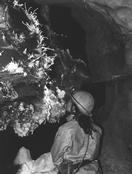
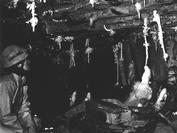
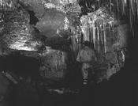

.
Pwll Du village was closed in 1963, the residents relocated in The Avenue and Dragon Lane in Govilon and the rows of miners’ and quarrymens’ houses pummelled into the dust from which they had risen. The Lamb Inn stands resolute, known today as the Lamb & Fox, around which the ghosts of Pwll Du whisper and dart. The community lives on in the memories of those who return to raise their pints within its redoubtable walls on a bright summer’s day or a windswept winter’s evening.
Deep in the bowels of the earth the recently fastest-discovered cave system in Britain of Ogof Draenen (Cave of Thorns), spanning some 70km+ since October 1994, underlies the roadway and workings of the Pwll Du Tunnel. Coal sediments have been found in the cave and large accumulations of bat guano have been shown by Carbon-14 dating to be almost 2000 years old. Did the Romans mine in the area and create an access route to the cave which was subsequently lost? Could drainage shafts have been sunk by miners of old from the lowest coal measures in workings off the sides of the Pwll Du Tunnel to the limestone aquifers in the caves below?
The area has played a significant part in the development of modern science. In 1694 Edward Llwyd first recovered coal measure fossils from a mine at Llanelly Hill in the Clydach Gorge. He also studied rocks of the Blorenge and published the world’s first catalogue of fossils in 1699, demonstrating that life has evolved gradually over time rather than emerging spontaneously as the result of a biblical flood
|
Rigging the traverse to Strawberry
Passage some 12m+ up the wall of Cairn Junction Hall. |
Strawberry Passage where water enters
through the roof not far away from the location
of the Pwll Du Tram Tunnel. |
|
|
 Emma Porter visits a Secret Grotto in the further recesses of the Dollimore Series. (Clive Westlake) |
 Emma Porter by formations
around Circus Maximus in the Dollimore
Series. |
|
 Out of the Blue: attractively decorated
streamway in the Dollimore Series. |